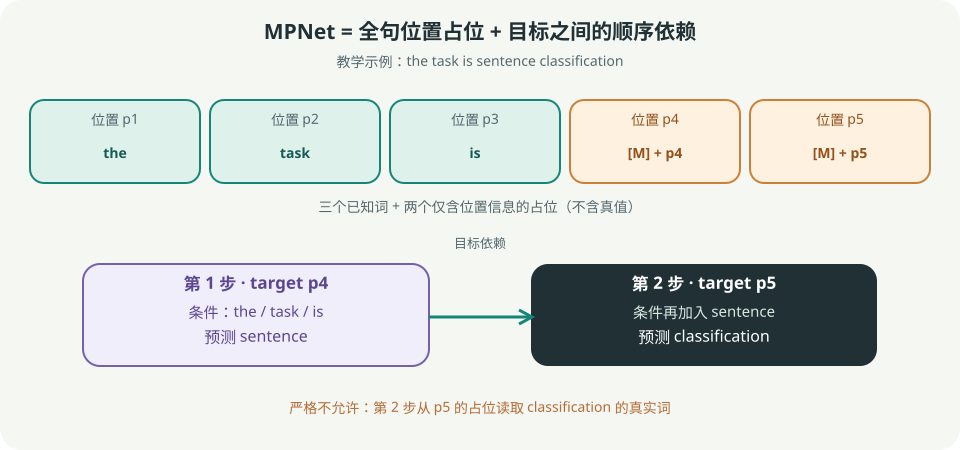

1. 一句话中缺少两个词，为什么 MLM 不够
想象句子 the task is sentence classification，将最后两个词作为目标。MLM 的两个输出位置能读到同一份被遮盖上下文 the task is [M] [M]；在标准 MLM loss 中，每个目标各自预测自己的原词，没有显式地让第二个被预测词条件于第一个目标的真实值。
XLNet 的排列 LM 可以先预测 sentence，再条件于它预测 classification。但当某些目标词尚未被纳入条件上下文时，普通排列目标通常不向模型显式提供那些未见位置完整的占位信息。MPNet（Song et al., NeurIPS 2020）所说的 position discrepancy，就是这里预训练与下游完整句子输入之间的差异，而不是“绝对位置编码普遍失效”。
即使模型能学习统计关联，也不意味着先验地掌握被遮盖位置的个数和布局。知道有哪些槽位与知道槽位内真实的 token是两回事。
2. 先固定可见词与要预测的词
用自然顺序 x₁=the, x₂=task, x₃=is, x₄=sentence, x₅=classification 做一个教学例子。我们选 x₁,x₂,x₃ 为可见上下文，目标按排列次序预测 x₄ 再预测 x₅。在这次分解中：
- 预测
x₄时可见the task is，并且知道第四、第五位置都有待填内容。 - 预测
x₅时除上述信息外，条件集合还可以加入前一目标真实词sentence（训练时的自回归 teacher forcing）。 - 不论预测哪一个目标，
[M]+p₄、[M]+p₅这类占位承载的是缺口位置，并不能偷偷把sentence或classification的真值暴露给当前目标。

3. 什么是 position compensation：给未来位置留座位
MPNet 将序列按某次抽样分为非预测部分与预测部分。与 PLM 只给出已可见 token 的 content 不同，MPNet 在非预测部分再添加对应于待预测 token 的 [M] 占位与位置嵌入，让网络在编码上下文时仍然接触所有位置索引。位置补偿的重点是让位置索引完整，不是提前提供任何被预测词的内容。
这一点可以从原研究团队的示例精确核对：非预测词 x₁,x₃,x₅ 连同对应的 p₁,p₃,p₅ 保留；如果预测集合是 x₄,x₆,x₂，就增加 [M]+p₄、[M]+p₆、[M]+p₂ 的占位。这样每个预测步骤能看到全句位置结构。论文作者将“目标词之间的序列依赖”和“完整位置信息”视为两个互补的贡献。
视觉上可把非预测区域分成两个子区域：真实 token（带内容+位置）和 mask 占位（带 mask 身份+位置）。预测区域则通过 two-stream attention 使后续目标利用先前目标。复现中最需要小心的是不同流之间的屏蔽规则：若当前目标能从自己的 content 流读到正确标签，就发生了信息泄漏。
4. 目标函数为什么不等于独立 MLM
令 C 为可见 token 集合，M 为此次待预测位置，z 为 M 内抽样的预测顺序。MPNet 学习逐步恢复目标词。下面是抽象的、去掉具体网络内部投影的目标：
这里 P_all 是全部槽位的位置/占位信号，不含未预测词的内容；公式是机制抽象，不能把位置占位解释成可观测的真词。标准 MLM 若在目标损失中彼此独立预测，对应的是没有“此前目标真实词”这一条件项。MPNet 在训练时把前面目标作为条件，利用目标之间的语义依赖。
两流注意力承接 XLNet 的信息隔离：content stream 可为后续目标保留先前内容；query stream 不可读取本目标对应的真实词。若 batch 大小为 B、长度 T、隐藏维 H，则一般的流状态可抽象为 [B,T,H]，预测头把当前目标向量变成 [B,|M|,V] 的词表 logits。注意不同实现对补偿 token 和可预测 token 可能采用展开布局，不能从这个抽象形状直接推断完整实现的序列长度或显存。
5. 怎么判断哪部分设计真有用
MPNet 原论文 §3 与研究团队公开解读将增益归因于多个设计的协同，不只归因于“mask 更好”。原论文报告对 GLUE、SQuAD 等任务的对照，重要的是读对 split 与实验设置，不能把 dev/test 或 SQuAD 的 EM/F1 直接混成一个数。
论文消融（Table 5）分别移除 position compensation、permutation 和 output dependency；这些操作对应不同的目标信息缺口。研究团队给出的一个特定口径对比，在假设 15% 目标 token 的设置下，MPNet 的 position information coverage 为 100%，而其信息使用表中 PLM 为 92.5%。这里的信息覆盖是论文定义的分析计数，不是独立的“准确率提升 7.5 个百分点”，也不能推广到任何目标比例。
| 机制 | 可利用的信息 | 仍要留意什么 |
|---|---|---|
| 独立 MLM | 所有 mask 槽位位置 | 目标之间不显式顺序条件化 |
| 排列 LM | 前序真实 token 与目标依赖 | 未预测部分的位置覆盖不足 |
| MPNet | 位置占位 + 前序目标依赖 | 必须严格阻断目标内容泄漏 |
6. 真正复现时要验收什么
首先核对 tokenizer、词表、随机采样目标集合与目标顺序；然后单独打印当前 query 在每一层可以读取的 key 列，检查只见先前目标内容而不能见自身的原始 ID。最后再验证遮盖占位是否覆盖所有需要的原始位置、padding 是否错误参与损失。一次可复现的最小试验，应固定随机种子、长度为五的序列和预测两个位置的具体掩码。
MPNet 作为预训练 Encoder 可以微调做分类、抽取和理解任务，但原始 MPNet 预训练权重并不自动等价于一个高质量句向量检索模型；后续使用 MPNet backbone 的句向量模型往往还有独立的对比学习或检索微调阶段。遇到同名模型需查 checkpoint 的训练目标，而不是只看“MPNet”三个字。
7. 交互：逐次释放什么信息
预测 x₄、x₅ 的上下文对照
示例来自“the task is sentence classification”的简化排列；注意这里只呈现条件集合，不代表模型真的生成了正确词。
BERT MLM： 输入：the task is [M] [M]；两个缺口的位置都存在。 p(x₄ | 可见词及 mask) 与 p(x₅ | 可见词及 mask) 分别监督。 目标 x₅ 的损失不显式以真实 x₄=sentence 为条件。
8. 三个很容易扩大的误解
“MPNet = XLNet + 全词遮盖”：不准确。核心是目标词之间的依赖与额外位置占位，WWM 是另一个关于如何选目标组的策略。“知道完整位置就知道词”：不准确。占位不包含真词，query 仍不能读取自己的标签。“MPNet 论文证明它是最佳 embedding”：不准确。预训练论文的文本理解评估与后续句向量模型的对比微调及检索基准不是同一个实验。
关键结论
- MLM 保留所有缺口位置但不显式对预测目标做自回归依赖；XLNet 可条件预测多个目标但缺失未见位置的完整占位。
- MPNet 利用 mask+position compensation 表示完整槽位布局，同时由排列预测和双流注意力利用先前目标信息。
- 位置与内容必须区分；论文的信息使用分析数字不是通用的任务性能增益。
原始论文与研究者技术说明
- Song et al., MPNet: Masked and Permuted Pre-training for Language Understanding, NeurIPS 2020，§2 与 Figure 2；Table 1、Table 5。
- Microsoft Research, MPNet 研究者机制解读，Input Consistency、Output Dependency、Method Analysis（2020-12-09）。
- Yang et al., XLNet，§2（PLM 与 two-stream 对照）；Devlin et al., BERT，§3.1（MLM）。